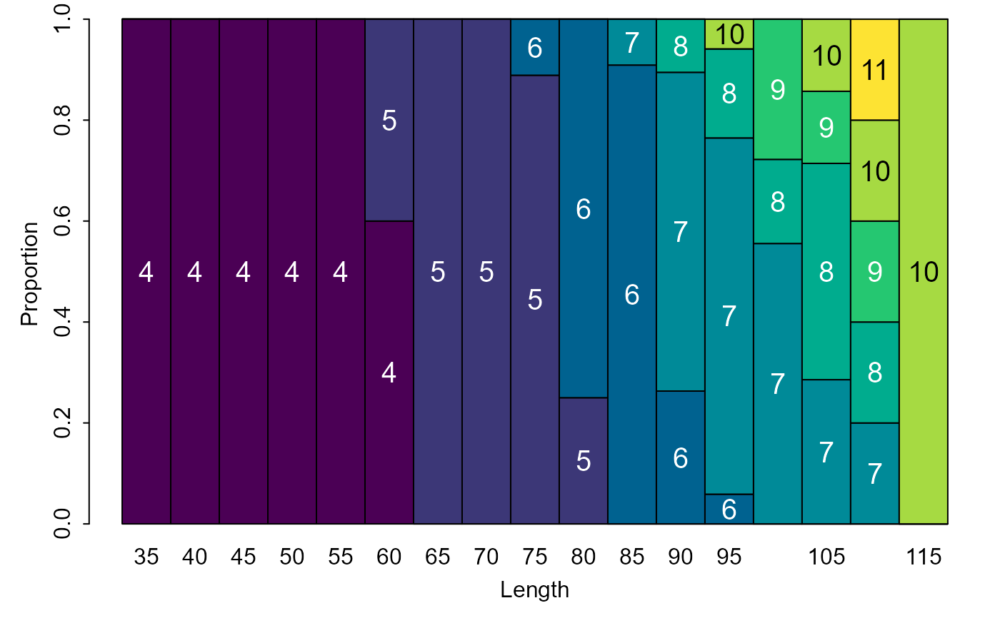
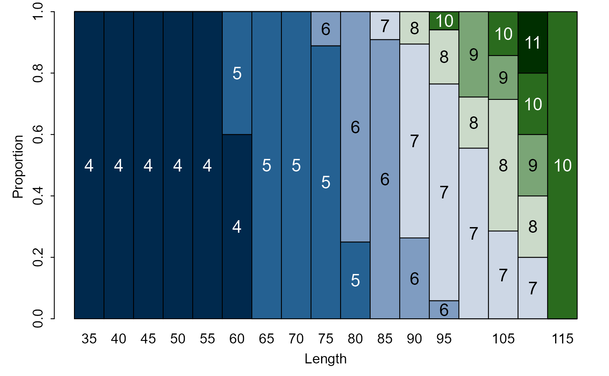
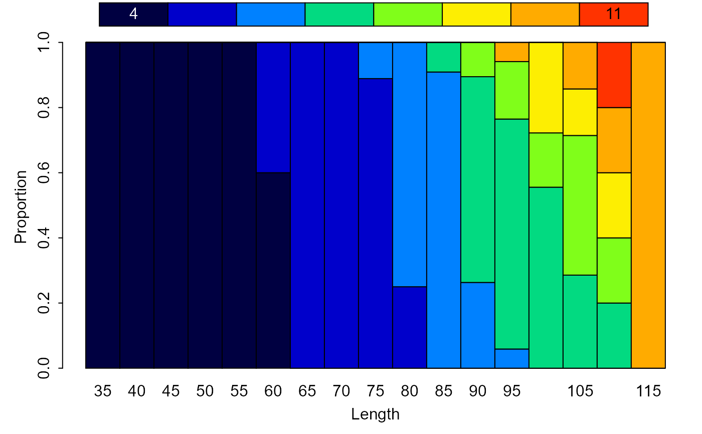
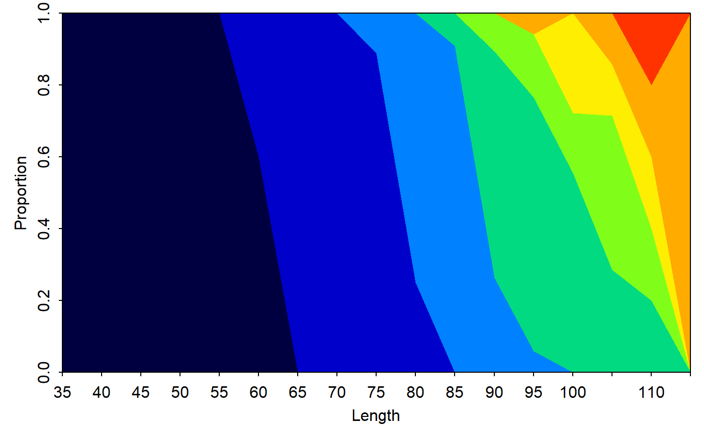
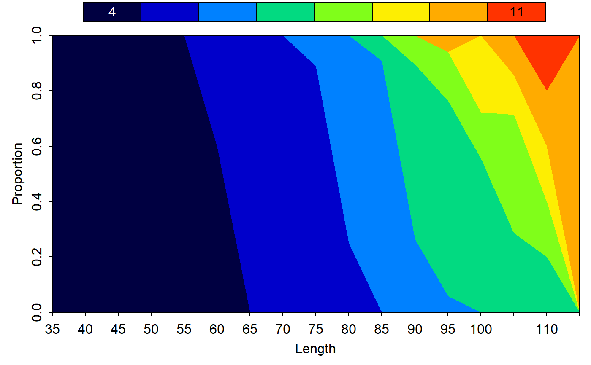
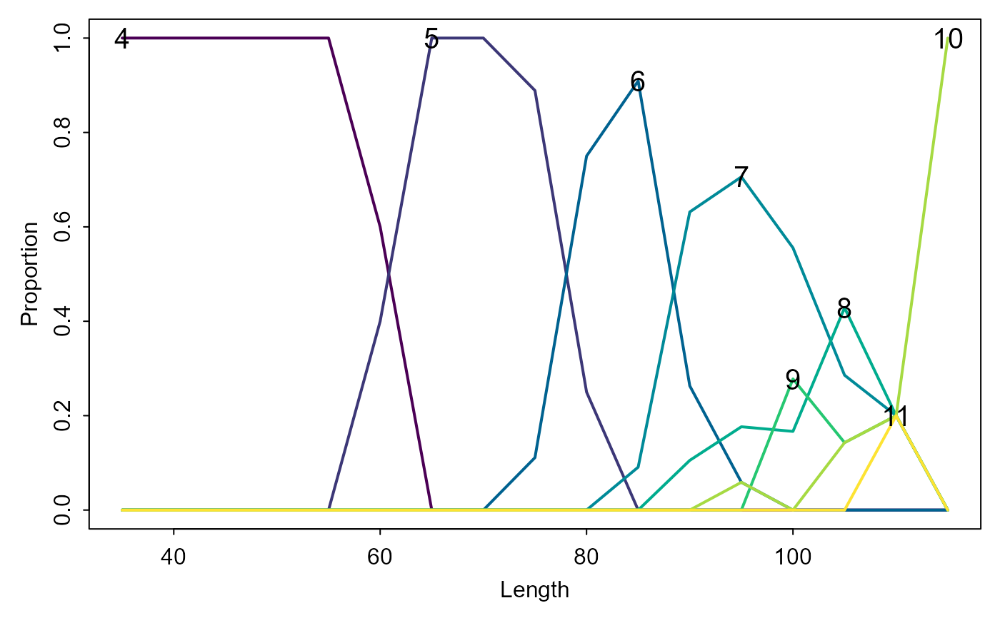
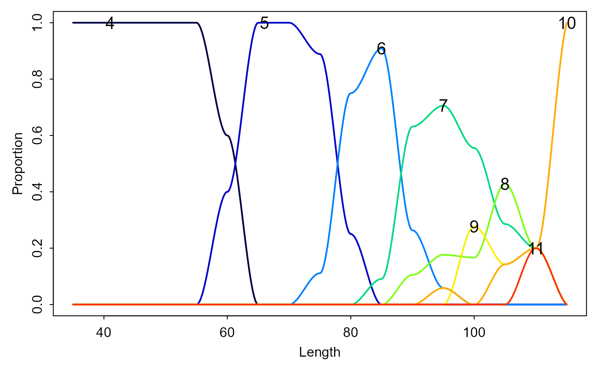
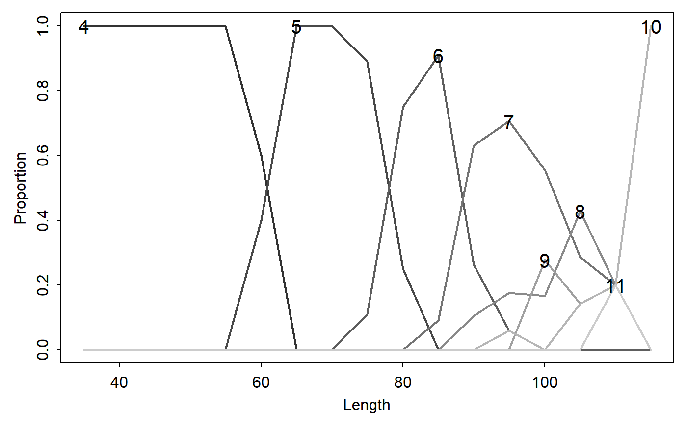
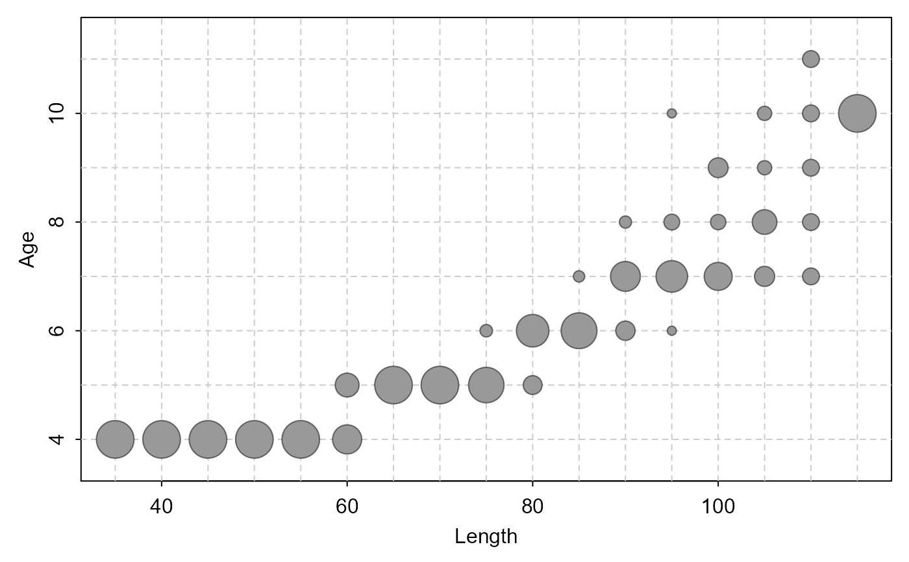
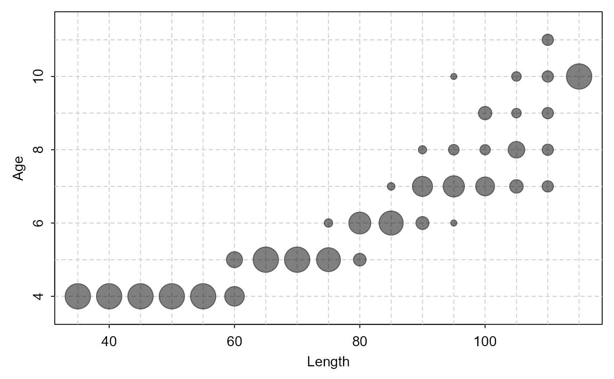

Various plots to visualize the proportion of fish of certain ages within length intervals in an age-length key.
A numeric matrix that contains the age-length key.
A string that indicates the type of plot to construct. See details.
A string that contains the label for the x- or y-axis.
A numeric of length 2 that provide the limits for the x-axis or y-axis.
A logical that indicates whether a legend should be displayed (not implemented for type="bubble"). See examples.
A numeric character expansion value for labels inside the bars when type="barplot" or on the lines when type="lines" or type="splines". Only used if showLegend=FALSE.
A numeric character expansion value for labels on the legend when showLegend=TRUE.
A numeric that indicates the line width when type="lines" or type="splines".
A numeric that indicates the span value to use in loess when type="splines".
A logical that indicates whether a grid should be placed under the bubbles when type="bubble" or a character or appropriate vector that identifies a color for the grid. See examples.
A single character string that is a palette from hcl.pals or a vector of character strings containing colors for the bars, areas, lines, or spline lines of different ages; defaults to the "viridis" palette in hcl.colors. A single string that indicates the color of the bubbles when type="bubble".
A single numeric that indicates the relative width of the bubbles when type="bubble". A value of 0.5 means that two full-width bubbles would touch each other either in the x- or y-direction (i.e., this would represent half of the minimum of the physical distance between values one-unit apart on the x- and y-axes). Set this to a value less than 0.5 so that the bubbles will not touch (the default is 0.45).
A logical that indicates whether the data should be added to an already existing plot. May be useful for visually comparing age-length keys. Only implemented when type="bubble".
Additional arguments to pass to plot or barplot.
None, but a plot is constructed.
A variety of plots can be used to visualize the proportion of fish of certain ages within length intervals of an age-length key. The types of plots are described below and illustrated in the examples.
A “stacked” bar chart where vertical bars over length intervals sum to 1 but are segmented by the proportion of each age in that length interval is constructed with type="barplot". The ages will be labeled in the bar segments unless showLegend=TRUE is used.
A “stacked” area chart similar to the bar chart described above is constructed with type="area".
A plot with (differently colored) lines that connect the proportions of ages within each length interval is constructed with type="lines".
A plot with (differently colored) lines, as estimated by loess splines, that connect the proportions of ages within each length interval is constructed with type="splines".
A “bubble” plot where circles whose size is proportional to the proportion of fish of each age in each length interval is constructed with type="bubble". The color of the bubbles can be controlled with col= and an underlying grid for ease of seeing the age and length interval for each bubble can be controlled with grid=. Bubbles from a second age-length key can be overlaid on an already constructed bubble plot by using add=TRUE in a second call to alkPlot.
Note that all plots are “vertically conditional” -- i.e., each represents the proportional ages WITHIN each length interval.
5-Age-Length Key.
Ogle, D.H. 2016. Introductory Fisheries Analyses with R. Chapman & Hall/CRC, Boca Raton, FL.
See alkIndivAge for using an age-length key to assign ages to individual fish. See hcl.colors for a simple way to choose other colors.
## Make an example age-length key
WR.age <- droplevels(subset(WR79, !is.na(age)))
WR.age$LCat <- lencat(WR.age$len,w=5)
raw <- xtabs(~LCat+age,data=WR.age)
WR.key <- prop.table(raw, margin=1)
round(WR.key,3)
#> age
#> LCat 4 5 6 7 8 9 10 11
#> 35 1.000 0.000 0.000 0.000 0.000 0.000 0.000 0.000
#> 40 1.000 0.000 0.000 0.000 0.000 0.000 0.000 0.000
#> 45 1.000 0.000 0.000 0.000 0.000 0.000 0.000 0.000
#> 50 1.000 0.000 0.000 0.000 0.000 0.000 0.000 0.000
#> 55 1.000 0.000 0.000 0.000 0.000 0.000 0.000 0.000
#> 60 0.600 0.400 0.000 0.000 0.000 0.000 0.000 0.000
#> 65 0.000 1.000 0.000 0.000 0.000 0.000 0.000 0.000
#> 70 0.000 1.000 0.000 0.000 0.000 0.000 0.000 0.000
#> 75 0.000 0.889 0.111 0.000 0.000 0.000 0.000 0.000
#> 80 0.000 0.250 0.750 0.000 0.000 0.000 0.000 0.000
#> 85 0.000 0.000 0.909 0.091 0.000 0.000 0.000 0.000
#> 90 0.000 0.000 0.263 0.632 0.105 0.000 0.000 0.000
#> 95 0.000 0.000 0.059 0.706 0.176 0.000 0.059 0.000
#> 100 0.000 0.000 0.000 0.556 0.167 0.278 0.000 0.000
#> 105 0.000 0.000 0.000 0.286 0.429 0.143 0.143 0.000
#> 110 0.000 0.000 0.000 0.200 0.200 0.200 0.200 0.200
#> 115 0.000 0.000 0.000 0.000 0.000 0.000 1.000 0.000
## Various visualizations of the age-length key
alkPlot(WR.key,"barplot")

alkPlot(WR.key,"barplot",col="Cork")

alkPlot(WR.key,"barplot",col=heat.colors(8))

alkPlot(WR.key,"barplot",showLegend=TRUE)

alkPlot(WR.key,"area")

alkPlot(WR.key,"lines")

alkPlot(WR.key,"splines")

alkPlot(WR.key,"splines",span=0.2)

alkPlot(WR.key,"bubble")

alkPlot(WR.key,"bubble",col=col2rgbt("black",0.5))
